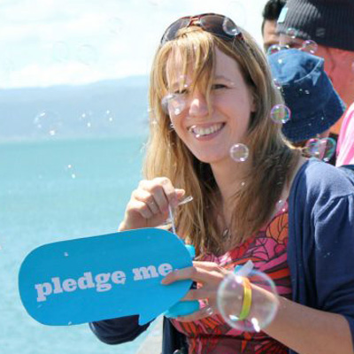
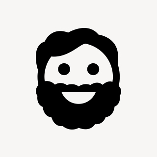

Inspiring speakers & mentors
-

- 
- 
How much: $75 standard, $45 student
Where: Dunedin Public Art Gallery, The Octagon
When: 9am, Friday 31 October 2014
UX Design Day 2014 is a one-day mini conference held at the Dunedin Public Art Gallery on Friday, 31st October, 2014. Attend if you have an interest in digital design or if you want your customers to love your business and products. Or both!
Our speakers will introduce User Experience Design, talk about what good design can do for your business and why it’s so important. With talks from some of the country’s top experts, this day will inspire and educate, helping you incorporate best practices & principles into your workflow.
If you’re an ace designer, never fear — you’re bound to learn something new from the wide variety of talks for all experience levels. UX Design Day is also a great opportunity to network with New Zealand’s vibrant design community.
Prepare for an action-packed day with a hands-on workshop and engaging talks. Of course we’ll make sure you’re well watered and fed (including dietary requirements)!
Questions? Contact us on Twitter, Facebook, or send an email.
See you there!
Veronica, Kitty, and Benjamin
How much: $75 standard, $45 student
Where: Dunedin Public Art Gallery, The Octagon
When: 9am, Friday 31 October 2014
There are lots of great design resources available online and in bookstores. Here are just a few of them.
Click one below or play resource roulette!
Follow us on Twitter, Like us on Facebook, all that. Use hashtag #uxdd.